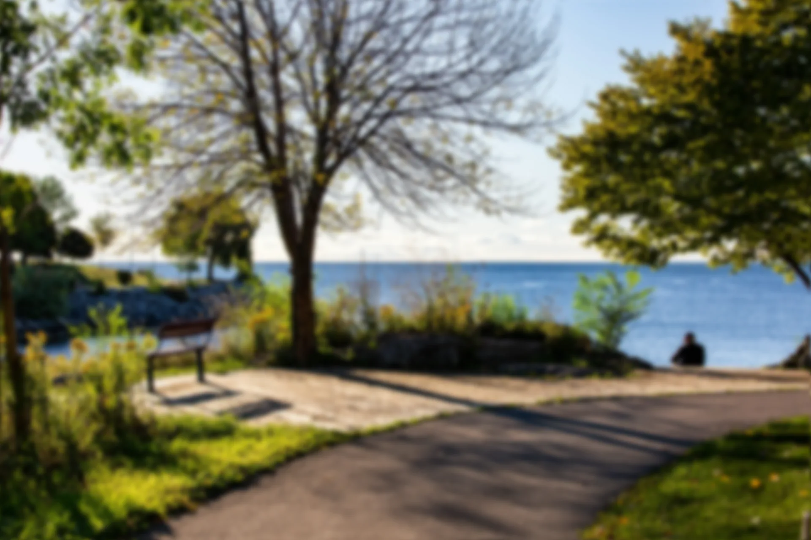
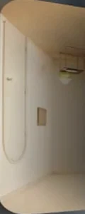
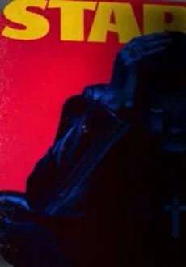
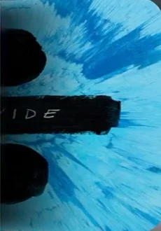
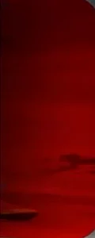
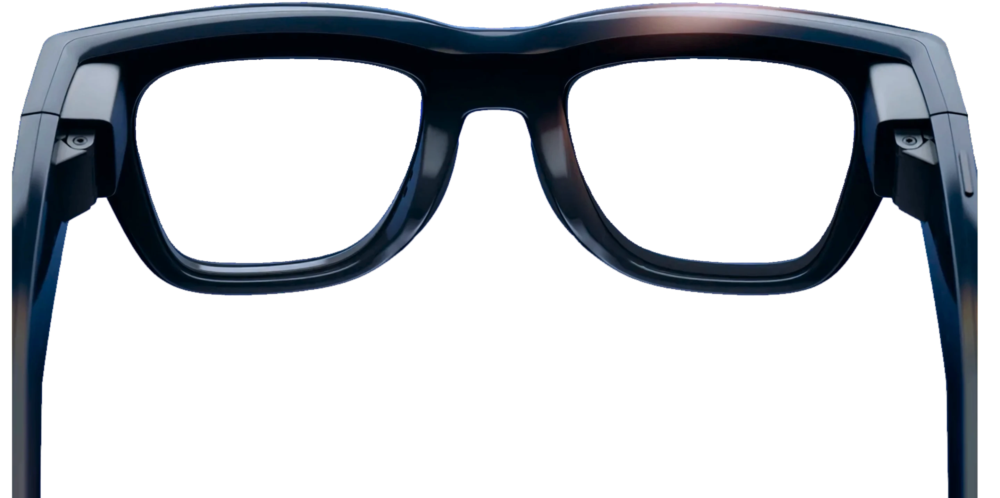
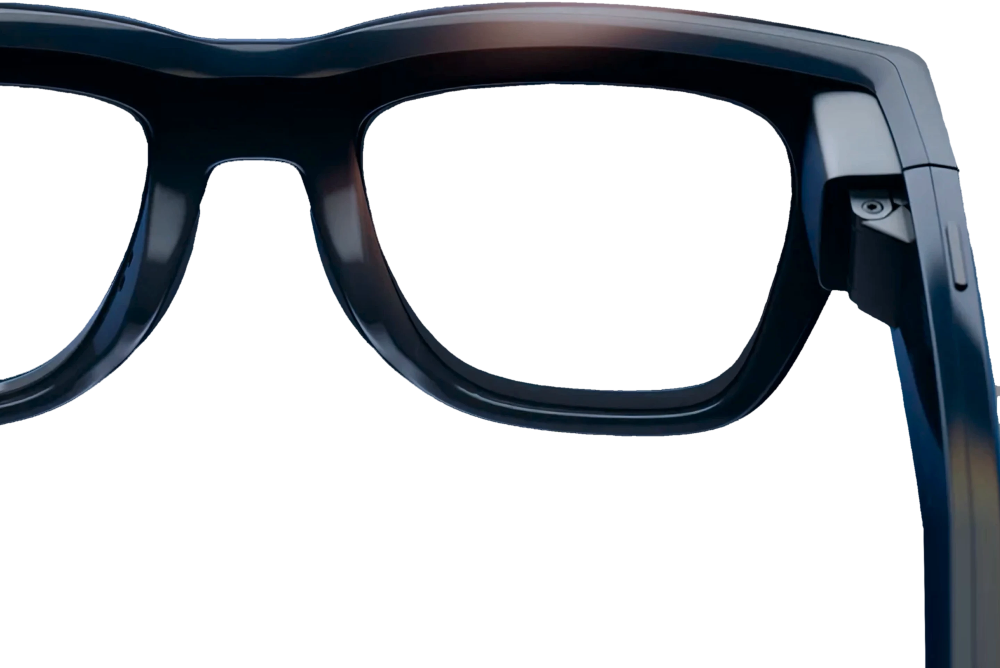

Meta Ray-Ban Display
YOUR WORLD. AUGMENTED.

CRUSH YOUR
NEXT RUN
SOUNDTRACK
YOUR LIFE
YOUR IDEAS
SUPERCHARGED
Google Maps
Lloyd Marín S.A.
24 hr (2 005 km)
Comte De santa Clara 15, 3341, Barcelona, Spain
Directions Start Call •••More
STRAVA
Today Morning Fun Run
10,01 kmDistance
5:29/kmAvg Pace
54:52Moving Time
Spotify®




Blinding Lights The Weeknd
ChatGPT
Tell me something new today
Here’s something interesting and recent: A new meteor event — in October 2025, Earth will likely pass through freshly emitted trails from comet 21P/Giacobini-Zinner, producing a Draconid meteor outburst. arXiv Models predict enhanced activity around October 8, dominated by faint meteors (which are best seen by radar or from very dark skies).
Something else!
Ask anything

